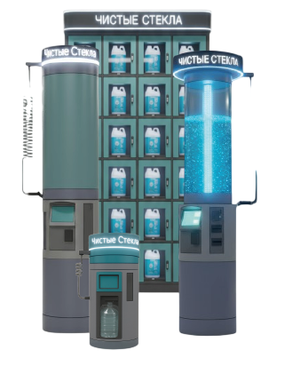

Франшиза «Чистые Стёкла»
с сетью автоматов стеклоомывающей жидкости
Запустите в своём регионе сеть автоматов по продаже стеклоомывающей жидкости и других авто‑жидкостей. Вы получаете готовые автоматы, IoT‑платформу управления, проверенные рецептуры и поддержку команды разработчиков и техников.

Как устроен бизнес в рамках франшизы
Вы становитесь партнёром сети «Чистые Стёкла» в своём регионе и развиваете сеть автоматов по продаже стеклоомывающей жидкости и других авто‑жидкостей на парковках, АЗС, у автомоек и торговых центров.
Автоматы работают 24/7, а вы видите выручку, остатки и состояние оборудования в реальном времени через Личный кабинет и мобильное приложение администратора.
Из чего складывается доход
- выручка от продажи стеклоомывающей жидкости и других авто‑жидкостей через автоматы;
- дополнительный доход от модулей: адресная выдача готовой тары, пылесос, другие услуги;
- повторные покупки за счёт бонусной программы и мобильного приложения для водителей.
Основные статьи расходов
- инвестиции в автоматы и инфраструктуру (оборудование, монтаж, подключение);
- закупка стеклоомывающих жидкостей и расходных материалов;
- аренда мест под автоматы (если площадки не ваши);
- обслуживание и выезды персонала;
- плата за доступ к платформе и сервисы (если предусмотрено условиями франшизы).
Что вы получаете как франчайзи «Чистые Стёкла»
Оборудование
- автоматы уличного и/или внутреннего исполнения с установленной электроникой и IoT‑модулем;
- система налива стеклоомывающей жидкости в тару клиента или готовую тару;
- возможность подключения дополнительных модулей: внешние баки, шкафы с адресной выдачей, пылесос и другие устройства.
Цифровая платформа
- облачный backend с историей транзакций, остатков, ошибок и сервисных событий;
- веб‑кабинет владельца и оператора: продажи, остатки, статусы, обслуживание, клиенты;
- мобильное приложение администратора с мониторингом и push‑уведомлениями;
- мобильное приложение для клиентов с бонусной программой и картой автоматов.
Бренд и поддержка
- право использования бренда «Чистые Стёкла» в согласованной зоне;
- шаблоны наружной рекламы и материалов для продвижения;
- обучение владельца и персонала работе с оборудованием и платформой;
- техническая и бизнес‑поддержка по запуску и развитию сети.
Почему это не просто автоматы, а цифровая сеть
Все автоматы франчайзи подключены к единой облачной платформе. Вы управляете сетью через Личный кабинет и мобильное приложение, а решения принимаете на основе реальных данных, а не предположений.
Прозрачность бизнеса
- выручка, остатки и статусы каждого автомата в режиме реального времени;
- история транзакций, ошибок и сервисных событий для анализа;
- сравнение локаций и точек по доходности.
Управляемость сети
- единые настройки ассортимента, цен и акций по всей сети;
- планирование выездов и обслуживания по фактическим данным;
- контроль соблюдения стандартов работы и сервиса.
Клиентская экосистема
- мобильное приложение для водителей с бонусной программой;
- уведомления о акциях и новинках;
- рост лояльности и повторных покупок.
Формат франшизы и обязанности сторон
Со стороны франчайзора
- предоставляем бренд и бизнес‑модель;
- поставляем автоматы, электронику и стеклоомывающие жидкости;
- даем доступ к IoT‑платформе, Личным кабинетам и приложениям;
- обучаем и поддерживаем вас и вашу команду;
- обновляем ПО автоматов и развиваем платформу.
Со стороны франчайзи
- ищете и арендуете локации для установки автоматов;
- организуете монтаж, подключение и базовое обслуживание;
- соблюдаете стандарты сервиса и бренда «Чистые Стёкла»;
- ведёте операционную деятельность и развиваете сеть в регионе.
Финансовая модель (общие принципы)
- паушальный взнос за бренд, бизнес‑модель и стартовое обучение;
- роялти и/или маржа на поставках стеклоомывающих жидкостей и расходников;
- стартовый пакет оборудования для запуска сети в регионе.
Точные цифры и варианты пакетов вы получаете в индивидуальной финансовой модели после заполнения заявки.
Регион и условия эксклюзивности
Мы поэтапно развиваем сеть «Чистые Стёкла» по регионам России. На этапе первичного общения:
- проверяем, свободен ли ваш регион или город;
- обсуждаем возможный формат эксклюзивности (по городу, агломерации, области);
- согласуем план развития сети — минимальное количество автоматов и сроки запуска точек.
Если регион уже частично занят, можем рассмотреть вариант сотрудничества с разделением зон ответственности.
Как мы запускаем франшизу вместе с вами
1. Заявка и знакомство
Вы оставляете контакты и кратко описываете регион и ваши возможности по запуску. Мы созваниваемся, отвечаем на вопросы и обсуждаем формат сотрудничества.
2. Финансовая модель под ваш регион
На основе статистики работы автоматов и ваших вводных по аренде, стоимости труда и трафику готовим индивидуальную модель окупаемости.
3. Договор и стартовый пакет
Согласуем условия, количество автоматов, график поставок оборудования и стеклоомывающей жидкости. Подписываем договор.
4. Подготовка и обучение
Настраиваем Личный кабинет, подключаем вас к IoT‑платформе, обучаем работе с оборудованием и цифровыми инструментами.
5. Запуск автоматов и масштабирование
Помогаем выбрать первые локации и запустить автоматы. Далее анализируем показатели, даём рекомендации и вместе планируем развитие сети.
Оставьте заявку на франшизу «Чистые Стёкла»
Заполните форму — мы свяжемся с вами, расскажем о деталях франчайзинговой модели и отправим пример финансовой модели под ваш регион.